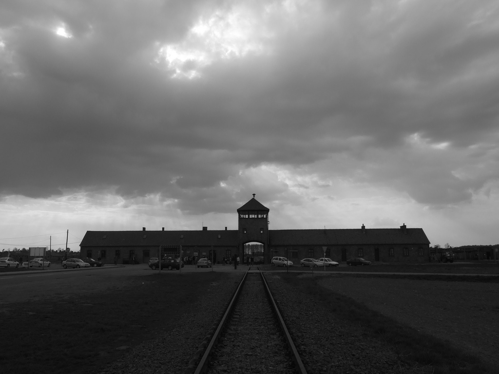

The Holocaust was the mass execution of Jews, gypsies, communists, homosexuals, disabled and other people thought to be inferior by the Nazi regime between 1933-1945. In 1933, shortly after Hitler took power in Germany the first concentration camp Dachau opened. In the beginning it was used as a holding facility for communists and other political enemies.
When the western parts of Poland were occupied by Germany, Jewish ghettos were formed to control the Jewish population. These ghettos were often overpopulated resulting in disease and starvation. The population in the ghetto could later be transported to the concentration and death camps.
In 1941 after the attack of the Soviet Union the Nazis began the “Final solution”. Territories captured by the army were later swept by the Einsatzgruppen, a mobile killing unit designed to hunt and kill Jewish populations in the Soviet Union. A famous incident was the massacre at Babij Jar near Kiev, Ukraine’s capital. During the 29th and 30th of September between 30-35 thousand Jews were executed and but in mass graves. 500 thousand Jews are believed to have been killed by the Einsatzgruppen.
There were two main types of camps, death camps and concentration camps. Death camps were “factories” designed to kill people. Concentration camps were often labor camps where prisoners would be worked to death. Both types had many sub-camps connected to them, these were often munitions factories, build projects and mines.
During spring in 1942 mass deportation from the ghettos across Europe began. Six death camps had been established: Chelmno, Belzec, Sobibor, Treblinka, Maidanek and the most famous, Auschwitz. Mass execution had been tested on Soviet prisoners of war (POWs). They had found that a gas called Zyklon-B was very effective at killing. Most Jews were sent directly to the death camps where they had their possessions taken from them. The stronger men were sent to concentration camps to help the war effort with manpower, the rest would be killed in gas chambers.
Thousands of prisoners were either executed, starved, died from disease or worked to death every day in the camps. When the camps were liberated by allied or Soviet forces they were shocked. Half-starved prisoners and piles of bodies waiting to be cremated. Between 1939 and 1945 around 11 million people had been killed, 6 million of them were Jews.

The enterence to Auschwitz-Birkenau. Source
Information might not be fully true, there are conflicting information